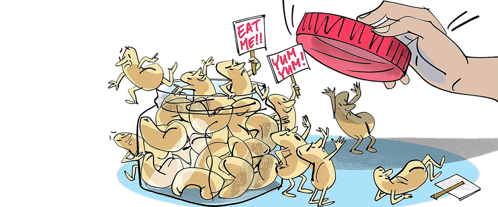
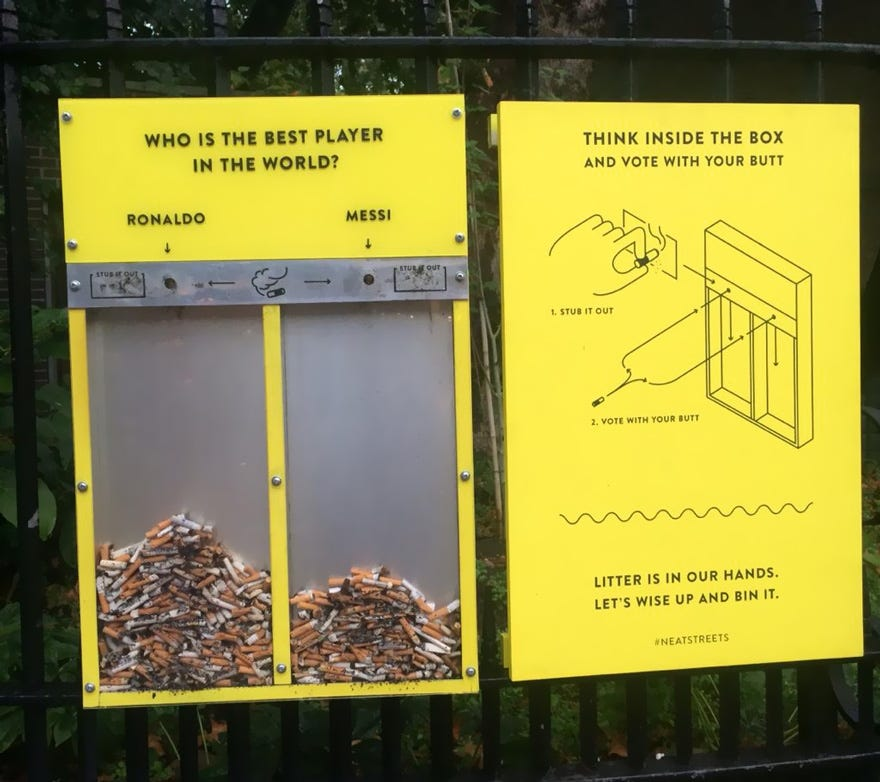

Protocols, Pipelines, & Labor
Every technological system is built by someone. That fact tends to disappear once the system is running. The interface presents itself as neutral, functional, self-evident, as if the choices encoded in it were not choices at all but simply the way things work. What gets obscured is the pipeline underneath: the decisions about what data to collect, how to label it, whose labor to use, and what gets discarded before the output is produced. The pipeline is where power lives, and it is almost always invisible to the person the system is being run on.
Kate Crawford's Atlas of AI (2021) begins not with code but with lithium. The extraction of minerals required to manufacture the physical infrastructure of artificial intelligence, the servers, the chips, the batteries, takes place in some of the most environmentally damaged and labor-exploited regions on earth. Crawford argues that AI is not a technology that floats above material reality but one that depends on it, and that the supply chain of computation reproduces the same circuits of extraction that Eric Williams documented in the transatlantic slave economy. The cloud has a mine at one end and a data center consuming the electricity output of a mid-size city at the other. Neither is visible in the interface.
The labor embedded in machine learning systems is an extension of the same logic. Content moderation, the work of reviewing images and text flagged by automated systems, is outsourced predominantly to workers in Kenya, the Philippines, and India, often at piece rates of less than two dollars an hour. The workers exposed to the most psychologically damaging content on the internet are the least compensated and the least visible. Time's 2023 investigation into OpenAI's use of Kenyan workers to label harmful content documented the toll of this arrangement: workers required to read and categorize descriptions of child abuse, mass violence, and torture, with minimal psychological support and no path to permanence. The AI that emerges from this labor presents itself as a product of computation. It is also a product of human exposure to harm at industrial scale.
Safiya Umoja Noble's Algorithms of Oppression (2018) traces how these embedded labor decisions produce outputs that are not neutral. Noble documents how Google's search results, generated through an algorithm that processes decisions made by engineers and weighted by advertising revenue, returned racist and sexist results for searches involving Black women for years, not because of individual prejudice at any single point in the pipeline, but because of the accumulated effect of decisions made across it. The protocol does not have opinions. But it was built by people who did, operating inside institutions that did, and it runs on data produced by a society that does. Neutrality is a design claim, not a technical reality.
Systems & Control
Technological systems don't only process information. They organize people. The administrative logic that Foucault identified in prisons and hospitals, the arrangement of bodies in space, the assignment of identities through official categories, the production of knowledge about populations as a precondition for governing them, has migrated into digital infrastructure with an efficiency that physical bureaucracy could never achieve. A database can process more people in a second than a clerk could in a year, and the decisions it makes feel, to the people subject to them, like facts rather than judgments.
The COMPAS algorithm, Correctional Offender Management Profiling for Alternative Sanctions, was used across the United States criminal justice system to predict the likelihood that a defendant would reoffend, and to inform sentencing, parole, and bail decisions. A 2016 ProPublica investigation found that COMPAS systematically rated Black defendants as higher risk than white defendants with equivalent criminal histories. Northpointe, the company that produced it, refused to disclose the algorithm on grounds of proprietary protection. A person's liberty was being determined by a system no one could inspect, and the system's designers had the legal right to keep it that way. The opacity that made COMPAS a business asset also made accountability structurally impossible.
Virginia Eubanks's Automating Inequality (2018) documents the same pattern across social services. The Allegheny Family Screening Tool, deployed in Pittsburgh to predict child abuse risk, drew heavily on data from families already in contact with social services, which meant it disproportionately flagged poor families, who use public services at higher rates than wealthy families experiencing equivalent conditions. The algorithm did not create this disparity; it inherited it from the data. But it transformed a structural inequality into an individual risk score, giving it the appearance of an objective finding. Eubanks calls this the digital poorhouse: a set of automated systems that surveil, sort, and punish the poor with a precision and scale that older bureaucracies could not manage.
Shoshana Zuboff's The Age of Surveillance Capitalism (2019) extends this analysis to the private sector. Zuboff argues that the dominant business model of the internet era is not the sale of products but the extraction and sale of behavioral data, what she calls behavioral surplus, collected without meaningful consent and used to predict and modify human behavior at scale. The systems built on this model do not merely observe. They intervene, using the data they have collected to adjust what a person sees, hears, and is offered until their behavior aligns with the outcomes the platform has been paid to produce. Control, in this model, does not require force. It requires a sufficiently detailed map of a person's habits, fears, and desires, and a sufficiently fast system for acting on that map before the person knows it is being read.
Datafication Regimes
To be datafied is to be made legible to a system that was not designed with you in mind. The act of converting a person into a data point requires choices, about what to measure, how to categorize it, what to treat as significant and what to discard. Those choices produce a record, and that record then becomes the basis for decisions about housing, credit, employment, healthcare, and movement. The record is not the person. But in the systems that consume it, the record is often all that exists.
The credit score is one of the oldest and most consequential datafication systems in American life. Developed throughout the 20th century and standardized as the FICO score in 1989, it converts a person's financial history into a three-digit number that determines access to loans, rental housing, and in some states, employment. The categories used to calculate the score, payment history, length of credit history, types of credit held, encode advantages that accrue along racial and class lines. People without credit histories are not people without financial responsibility; they are people whose financial activity has not been datafied in forms the system recognizes. The score treats its own blind spots as the person's deficiency.
China's Social Credit System is the most discussed contemporary example of a government-administered datafication regime, but the framing that circulates in Western media, a single score controlling all aspects of life, is significantly overstated. What exists in practice is a set of fragmented, often municipal systems that share a logic: the conversion of behavior into administrative categories that determine access to services, travel, and public participation. The significant question raised by this system is not unique to China. It is the same question raised by the COMPAS algorithm, the Allegheny Family Screening Tool, and the No Fly List: who decides what behaviors produce what categories, under what accountability, and with what possibility of correction when the data is wrong. The answer, in most datafication regimes, is: the institution that built the system, with limited accountability, and with correction processes that are designed to be difficult.
Ruha Benjamin's Race After Technology (2019) introduces the concept of the New Jim Code: the embedding of racial hierarchy into the design of technical systems in ways that reproduce discrimination while appearing race-neutral. Benjamin documents how facial recognition systems trained predominantly on lighter-skinned faces produce error rates for darker-skinned women that are as much as 34 percentage points higher than for lighter-skinned men, a finding documented by MIT researcher Joy Buolamwini in her Gender Shades project. The data set is the archive. When the archive is incomplete, when it has systematically underrepresented certain populations because those populations were not the intended subjects of the original collection, the system built on it does not fill in the gaps. It amplifies them.
User Discipline, & Behavioral Nudging
Platforms don't present themselves as disciplinary systems. They present themselves as services, tools for connection, information, entertainment, commerce. The language of choice is everywhere: preferences, settings, personalization, your feed. What is less visible is the degree to which the choices available within a platform are structured to produce specific behaviors, and that the structure itself is the product of deliberate design decisions made in service of measurable outcomes that the user did not choose and may not share.
The concept of the dark pattern, a user interface design choice that guides users toward actions that benefit the platform at the user's expense, was named by UX researcher Harry Brignull in 2010 and has since been documented across nearly every major consumer technology platform. Cookie consent banners that make rejection harder than acceptance. Subscription cancellation flows designed to maximize abandonment. Notification systems calibrated to re-engage users at the moment of lowest resistance. These are not accidents of design. They are engineering decisions, and in documented cases, they are A/B tested against user populations to confirm that they work. The interface that appears to serve the user is frequently an instrument for extracting something from them, time, attention, data, money, that the user did not intend to give.



The attention economy, a term developed by economist Herbert Simon and extended by Tim Wu in The Attention Merchants (2016), describes a market structure in which human attention is the commodity being bought and sold. Platforms compete for time-on-screen not as a vanity metric but as the primary input in the advertising revenue model. The consequence is an arms race of engagement engineering: infinite scroll, autoplay, algorithmically curated feeds that prioritize content shown by research to generate high engagement, which tends to mean content that generates anxiety, outrage, and social comparison. Frances Haugen's 2021 disclosures of internal Facebook research showed that the company's own studies found Instagram worsened body image for a significant proportion of teenage girls, and that this finding was documented, discussed internally, and did not result in product changes. The archive of that decision exists. It is in the leaked documents.
B.J. Fogg's Persuasive Technology (2003), developed at Stanford's Behavior Design Lab, codified the principles that now underlie much of consumer interface design: the use of motivation, ability, and triggers to produce specific behaviors at specific moments. Fogg's students went on to design products used by billions of people. The question his framework leaves open, and that technologists working in this space have been largely unwilling to engage, is the question of consent. Behavior design works precisely because it operates below the level of conscious deliberation. A person who knows they are being nudged can resist the nudge. The systems designed using these principles depend on most people not knowing. Michel Foucault described discipline as the exercise of power that does not need to announce itself. The notification that arrives at 7pm, calibrated by a model trained on your past engagement data to reach you at the moment you are most likely to open the app, is this kind of discipline. It does not look like power. It looks like your phone telling you something you wanted to know.